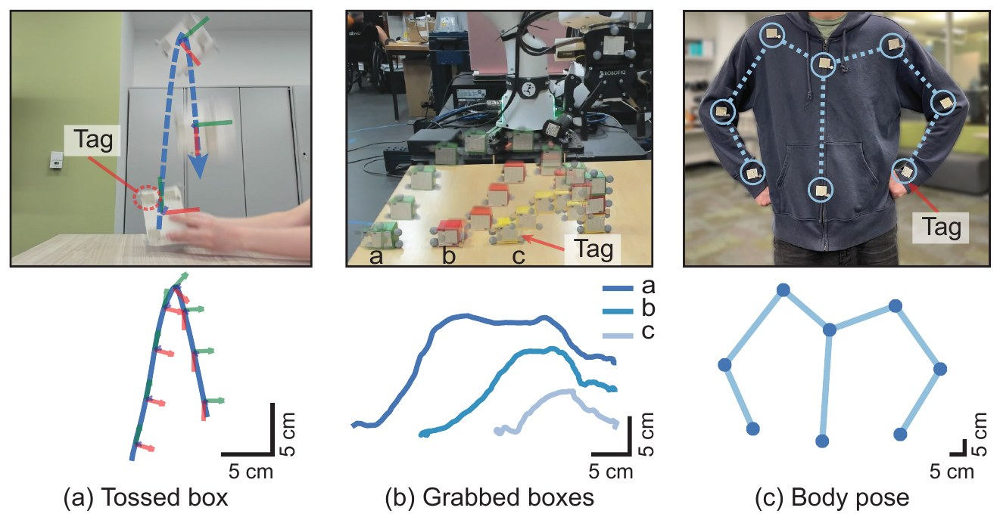
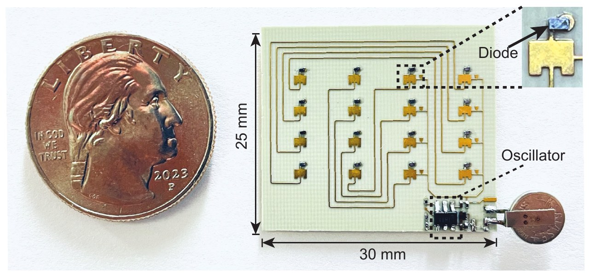
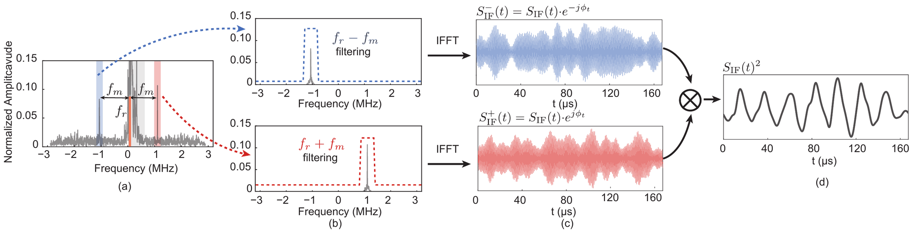
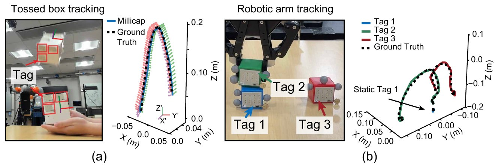
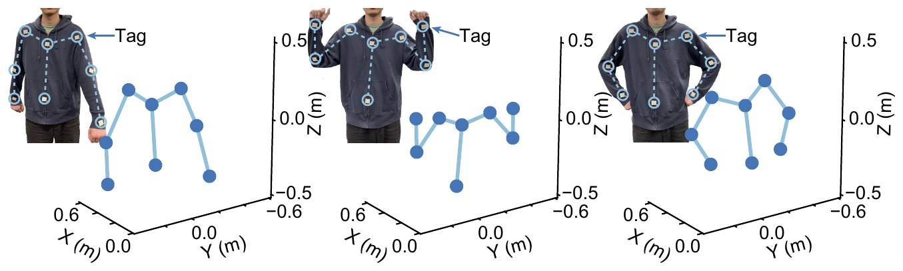

This paper introduces M3oCap, a millimeter-wave (mmWave) tag-based motion capture system that delivers accurate 6 degrees of freedom motion tracking. M3oCap utilizes a single commercial mmWave radar and custom-designed mmWave backscatter tags (2.5 cm × 3 cm) to localize and track the motion of tagged objects. Our system features novel algorithms that effectively isolate weak backscattered signals while accurately recovering phase changes induced by motion, allowing high-rate tracking of tag movements.
Experiments show that M3oCap achieves performance close to commercial motion capture systems – it provides 1000 measurements per second with a median range tracking accuracy of 250 µm, median localization accuracies of 3.34 mm, 3.95 mm, and 4.20 mm in x, y, z dimensions, and median orientation tracking accuracies of 1.7°, 2.3°, and 2.0° across pitch, roll, and yaw. We further demonstrate the system's fine-grained movement tracking capabilities through various motion capture tasks.

M3oCap pairs a commercial 60 GHz mmWave radar with our custom retro-reflective backscatter tags. Each 2.5 cm × 3 cm tag uses a 4×4 Van Atta array to reflect radar signals back toward the radar, while low-power diodes modulate the reflection. A tag uses under 283 µW and costs about $39.

Our signal processing pipeline (above) has three key components:


We release code and example data to facilitate future research in this direction. Instructions can be found in the readme of our github repo.
@inproceedings{m3ocap,
author = {Yang, Xin and Liu, Freddy Yifei and Li, Yunshuang and Gong, Yao and Jayaraman, Dinesh and Abari, Omid and Zhao, Mingmin},
title = {Motion Capture with Millimeter-Wave Tags},
year = {2026},
doi = {10.1145/3774906.3800488},
booktitle = {Proceedings of the 2026 ACM/IEEE International Conference on Embedded Artificial Intelligence and Sensing Systems},
pages = {319–333},
location = {Saint Malo, France},
series = {SenSys '26}
}This work was supported by the NSF (CNS-2516559 and CNS-2516558).
This project page template is adapted from Nerfies.